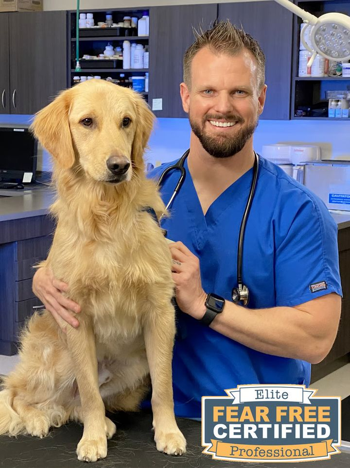

Dr. John Hutchens
Owner & Veterinarian · DVM
Dr. Hutchens grew up in Perry, just a few miles from where Hands of Hope Animal Hospital is located! He received his Doctor of Veterinary Medicine degree from the University of Georgia in 2009, and has been caring for the pets and their families in the Middle Georgia community ever since!
Dr. Hutchens is focused on providing high quality medicine, superior patient care, and an experience that emphasizes the relationship between the client and their pet, all within a fear free environment. His goal is to create an engaging atmosphere of client education and support that goes above and beyond the typical veterinary visit.
Over the years, Dr. Hutchens has developed a particular interest in veterinary dermatology, largely due to the remarkable successes he's observed in his patients. Many of these cases have been published and shared with his colleagues all over the world!
It is his desire to build on these successes and become a resource for healing and relief to many more patients in the future!